DISEÑO
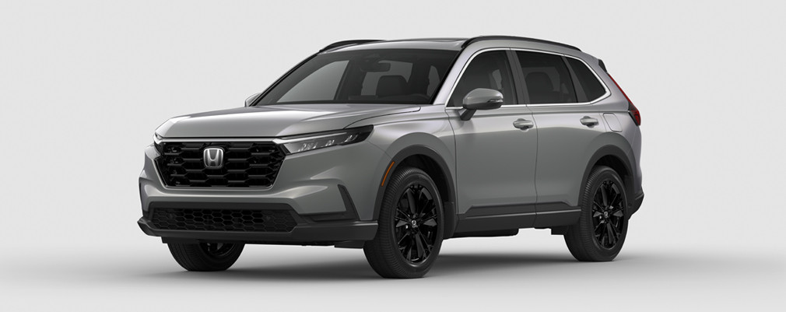
DISEÑO EXTERIOR
El estilo de la New CR-V cuenta con un diseño renovado de apariencia moderna y sofisticada con acabados en color negro y detalles cromados. Su silueta de estilo deportivo se combina con un frente agresivo que le generan una apariencia robusta.
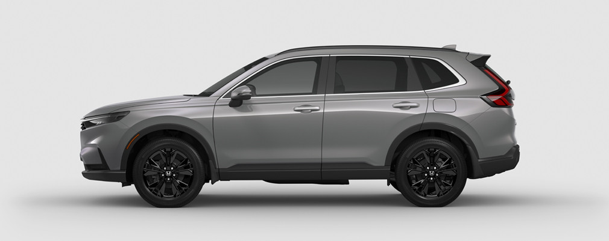
MOLDURAS COLOR NEGRO
En ambos paragolpes y puertas laterales se aplicaron molduras con terminaciones en color negro. Además, las molduras laterales protegen el zócalo del vehículo, dado que el mismo se encuentra debajo de las molduras.
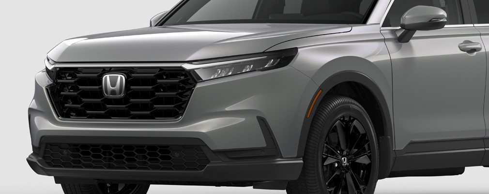
DISENIO FRONTAL
Frente agresivo y moderno con parrilla prominente, con acabado tipo panal de abejas, un capot largo que se funde con su deportiva defensa frontal con detalles en color negro que crean una sensación de mayor robustez.

DISENIO TRASERO
Diseño trasero minimalista, moderno y elegante. La New CR-V mantiene su ADN de luces traseras
verticales resaltando su aspecto tecnológico.
.jpg)
OPTICAS FULL LED
Ópticas full LED con sensor crepuscular para encendido automático de luz baja, ajuste de altura y
apagado automático.
.jpg)
FAROS TRASEROS LED
La New CR-V mantiene su ADN de luces traseras verticales combinadas con luces LED resaltando su aspecto tecnológico que proporcionan excelente luminosidad, garantizando buena visibilidad a la distancia.
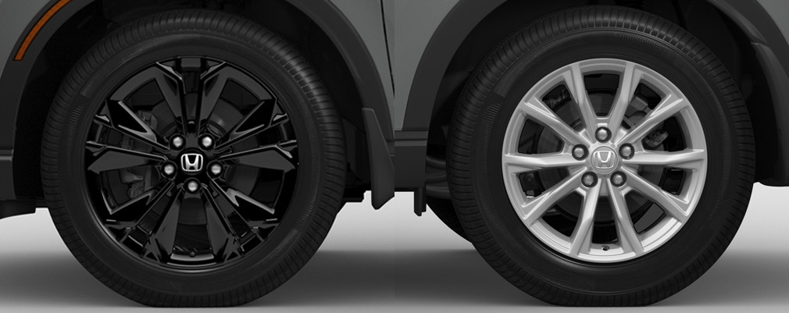
LLANTAS DE ALEACION
Nuevo diseño de llantas de aleación 18” color gris para la versión LX y EX (inclusive rueda de auxilio en las mismas medidas) y de 19” en color negro para versión EXL (inclusive rueda de auxilio en las mismas medidas) que le otorgan una apariencia deportiva y sofisticada. Todas las versiones tienen un talón de grandes dimensiones lo cual le otorgan un excelente confort de marcha.
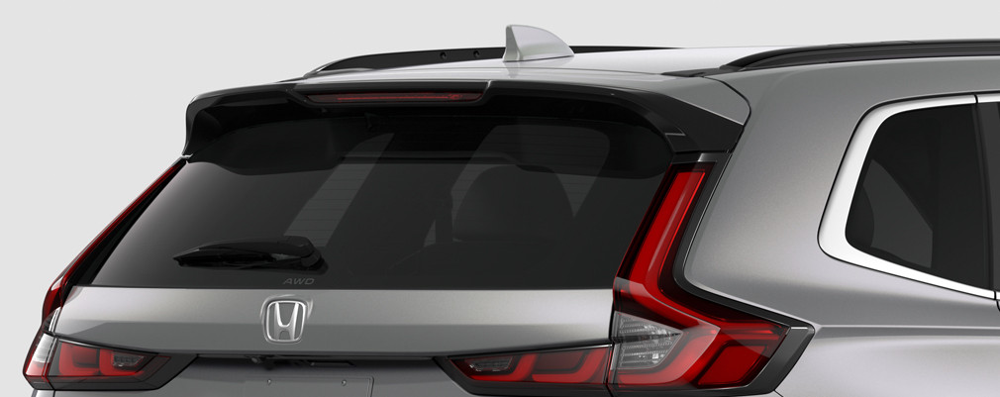
SPOILER TRASERO
Spoiler trasero con luz de freno LED y antena tipo aleta de tiburón.
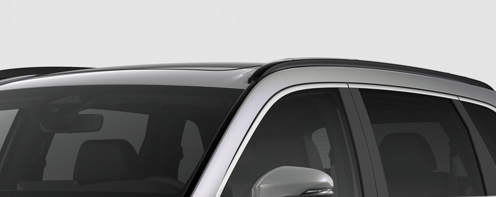
BARRAS DE TECHO
Barras longitudinales simil aluminio (solo version EXL).
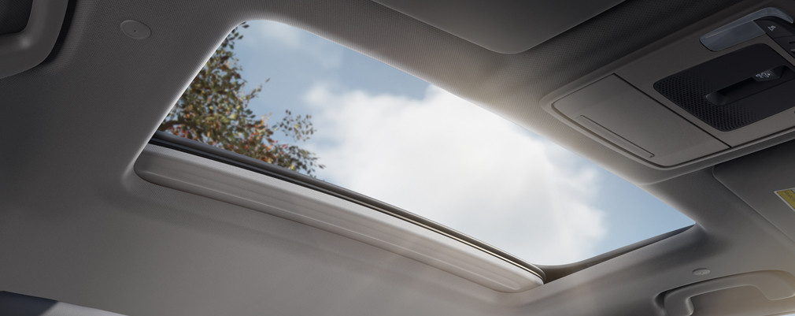
TECHO SOLAR
La New CR-V cuenta con techo solar corredizo eléctrico one-touch de 3 posiciones y anti-pinzamiento
para disfrutar de la luz natural y brisa fresca de los paisajes (versión EX y EXL).
.jpg)
DETALLES QUE COMPLACEN A TODOS LOS OCUPANTES
El interior de la New CR-V presenta una cabina totalmente renovada con un diseño minimalista y sofisticado, limpio e intuitivo. El enfoque de la cabina es el confort de los pasajeros, presentando amplias dimensiones, increíble espacio para las piernas y un mayor rango de reclinación de los asientos traseros.

ASIENTOS CONFORTABLES
La New CR-V incluye nuevos asientos ergonómicos que mejoran la comodidad de sus ocupantes. Tapizados en cuero ecológico para la versión EXL y tapizados en tela para las versiones LX y EX. Además, cuenta con más espacio tanto para pies como para las rodillas en las plazas delanteras y traseras.
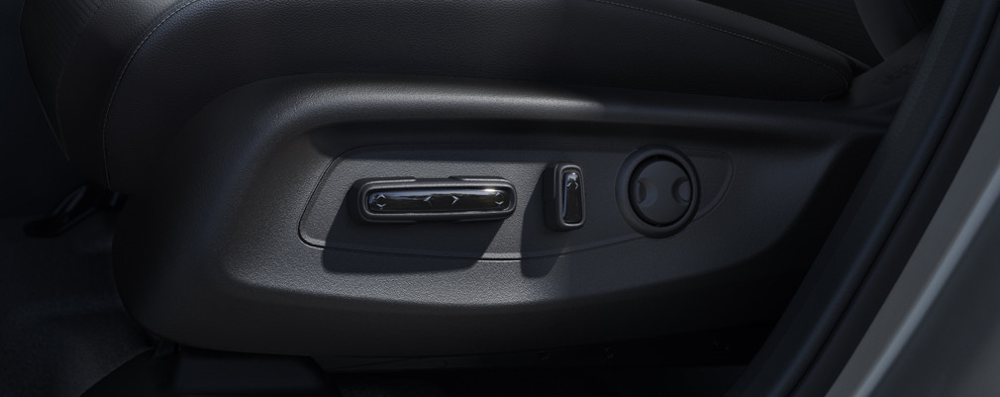
BUTACA ELECTRICA
Las versiones EX y EXL cuentan con asiento de conductor con ajuste eléctrico de 8 direcciones y
soporte lumbar eléctrico de 4 vías para configurar fácilmente la posición perfecta.
Además, la versión EXL incluye ajustes eléctricos para el acompañante y el asiento del conductor y posee memoria de posición para distintos conductores.
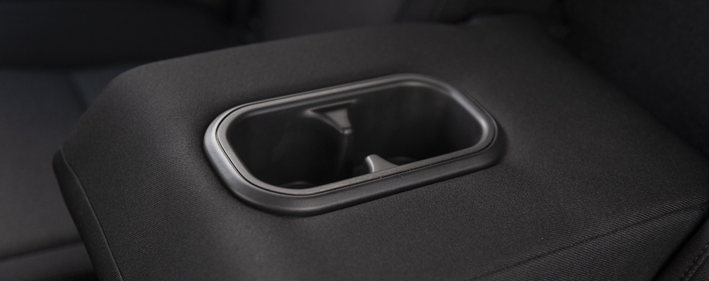
APOYABRAZOS TRASERO CON APOYAVASOS
Adicionalmente al apoyabrazos delantero, la New CR-V incluye apoyabrazos en los asientos traseros con portavasos incluidos. En todas sus versiones.
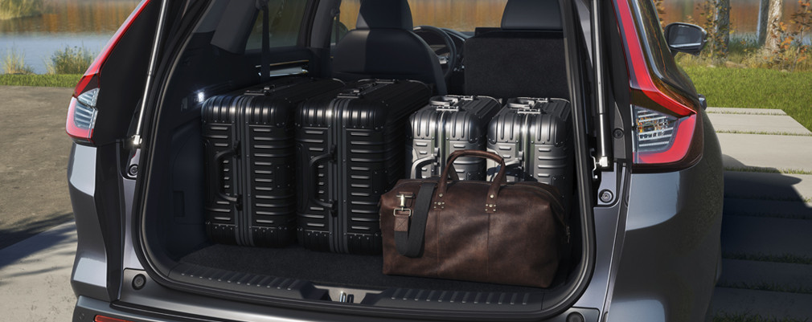
BAUL
Amplio baúl de 650 litros (con bandeja) y 1.028 litros sin bandeja. Distribución eficiente que ofrece espacio multipropósito tanto para uso cotidiano como para viajes largos.
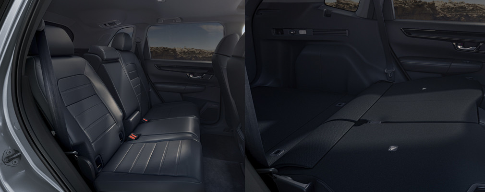
SISTEMA 60/40
Asientos traseros rebatibles y plegables 60 / 40 que amplían el espacio del baúl a 1.672 litros.
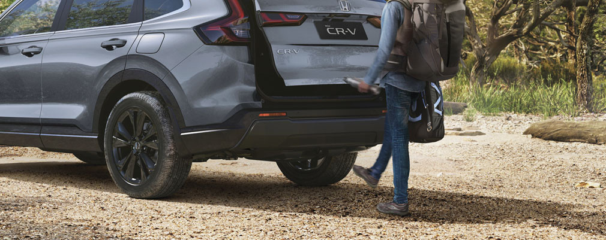
PORTON TRASERO CON ALTURA REGULABLE
El portón trasero con altura programable y acceso de manos libres permite el ingreso de objetos directamente en el baúl (versión EXL).
.jpg)
DETALLES DE INTERIOR
Volante y palanca de cambios revestidos en cuero ecológico (versión EXL).
❮
❯
TECNOLOGIA
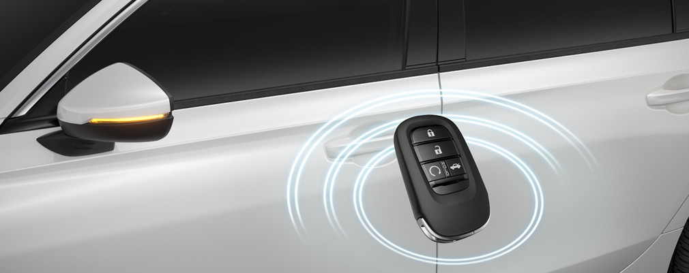
SMART ENTRY
El Civic Advanced Hybrid cuenta con un sistema de acceso inteligente sin llave (Smart Entry Keyless) y con encedido remoto del motor.
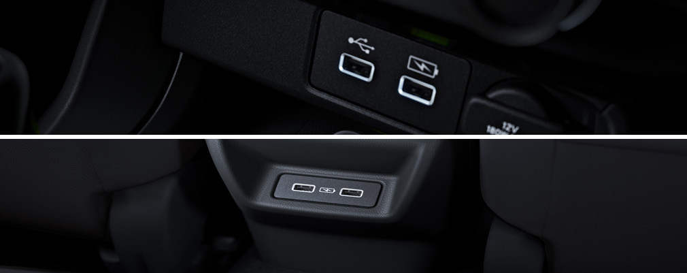
PUERTOS USB
Se incorporan puertos USB delanteros (2) y traseros (2) iluminados, de carga rapida y facil acceso.
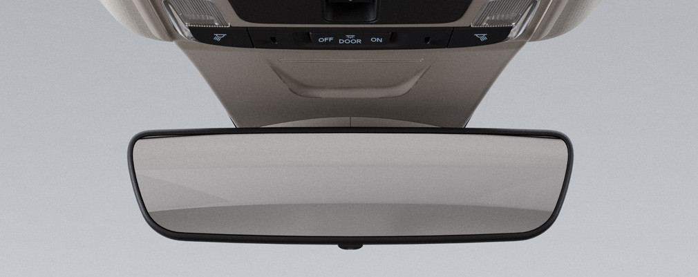
ESPEJO RETROVISOR ANTI ENCANDILAMIENTO
Al recibir la incidencia de la luz alta de otros vehiculos se oscurece en forma automatica para evitar encandilamiento.

MANOS LIBRES
Comandos de audio para ajustar el volumen y HFT (Hands-Free Telephone) que permiten mantener las manos en el volante durante el manejo, aumentando la seguridad.Con HFT, se puede enlazar el smartphone con el sistema de audio para hacer y recibir llamadas telefonicas.
BOTON DE ARRANQUE
El motor puede arrancar simplemente presionando el boton, requiriendo solo la presencia de las llaves.
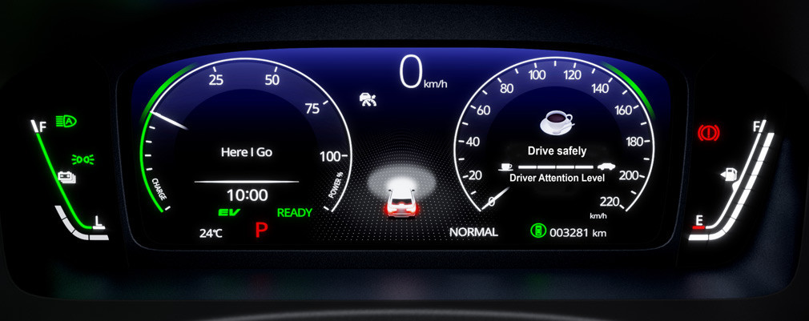
DRIVER ATENTION LEVEL
El sistema Driver Attention Level va calificando el manejo del conductor y de acuerdo a eso le dispara avisos sobre su nivel de atencion a la pantalla del instrumental central (por ejemplo, si es que el conductor se va quedando dormido).

BALIZAS AUTOMATICAS
Sistema de seguridad que ante una frenada de emergencia activa la senial de balizas de emergencia automatico (ESS).

ASISTENCIA PARRA ARARNQUE EN PENDIENTES
La version Civic Advanced Hybrid mantiene el conocido sistema para arranque en pendientes (HSA).

BRAKE HOLD
El sistema EPB o freno de estacionamiento electrico suma comodidad al conducir y puede activarse con un simple toque. La funcion Brake-Hold mantiene el vehiculo totalmente parado, en cualquier terreno o inclinacion, hasta tocar el pedal del acelerador.

CAMARA DE VISION TRASERA CON ANGULOS MULTIPLES
El Civic Advanced Hybrid cuenta con una camara de vision trasera de 3 angulos con guias dinamicas de direccion. Los diferentes puntos de visualizacion facilitan la conduccion a la hora de maniobrar o estacionar en espacios limitados.

LANEWATCH
El Civic Advanced Hybrid cuenta con un sistema de reduccion de punto ciego. Muestra en la pantalla el carril del lado derecho del vehiculo gracias a una camara ubicada en el espejo retrovisor externo, dando una vision 4 veces mas amplia.

CARGADOR INALAMBRICO
El Civic Advanced Hybrid cuenta con un cargador inalambrico (Wireless Charger).

ESPEJOS RETROVISORES ELECTRICOS
El Civic Advanced Hybrid incorpora espejos retrovisores laterales con luz de giro plegables electricamente.
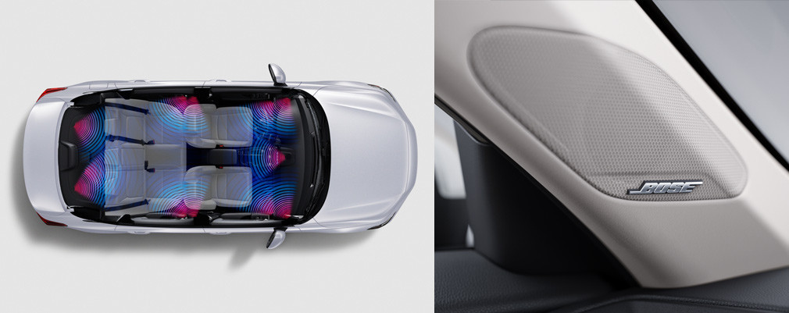
SISTEMA DE AUDIO PREMIUM
El Civic Advanced Hybrid incorpora un sistema de audio de 8 parlantes + 4 tweeters + subwoofer (BOSE).

SENSORES DE ESTACIONAMIENTO
Los sensores de estacionamiento delanteros (4) y traseros (4), alertan al acercarse a un objeto detectado, facilitando las maniobras de estacionamiento.
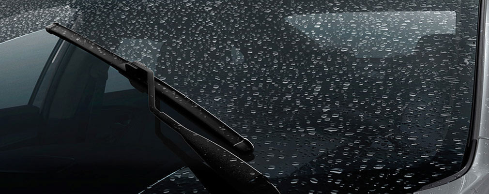
SENSOR DE LLUVIA
Incorpora un sensor de lluvia para activar automaticamente el limpiaparabrisas intermitente de velocidad variable, con spray rociador incluido en sus brazos para nunca perder la vision mientras se activa la limpieza.
.jpg)
MODOS DE CONDUCCION
El Civic Advanced Hybrid ofrece 3 modos de conduccion: Normal + Sport + Econ. Ademas de una mayor sostenibilidad, la exclusiva tecnologia e:HEV del nuevo Civic Advanced Hybrid ofrece mucha mas eficiencia y potencia.

PANTALLA MULTIMEDIA
La pantalla multimedia tactil de 9 pulgadas de alta resolucion con excelente nitidez y sistema touch screen compatible con plataformas Apple CarPlayTM(Cable/Inalambrico) y Google Android Auto TM (Cable/Inalambrico).
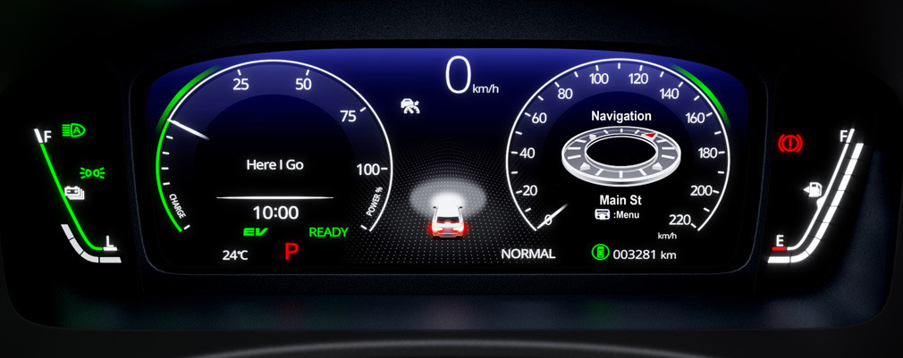
PANEL DE INSTRUMENTOS
Nuevo panel digital TFT (Thin Film Transistor) de alta resolucion de 10,2 pulgadas, que ofrece una completa informacion de la computadora a bordo con la posibilidad de hacer configuraciones de distintos modos de sistema multimedia (recordatorio de cinturones delanteros y traseros, entre otros) y Honda Sensing. Ahora con la representacion del vehiculo en 3D que muestra todas las funciones (freno, luces, giro, etc).

CLIMATIZADOR AUTOMATICO
Climatizador digital (dual-zone) con ajuste automatico de temperatura.
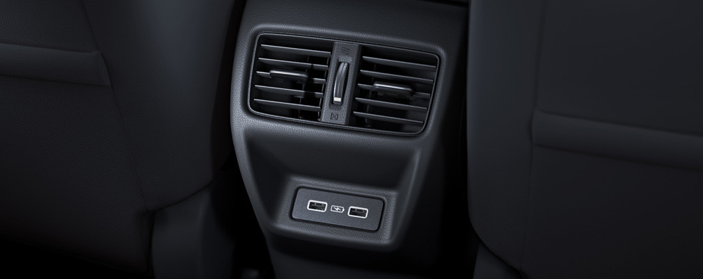
VENTILACION DE AIRE ACONDICIONADO TRASERO
Ventilacion que permite regular el aire acondicionado en las plazas traseras.

BUTACA ELECTRICA
El Civic Advanced Hybrid cuenta con asiento de conductor y acompaniante con ajustes electricos de 8 posiciones para configurar facilmente la posicion perfecta.
❮
❯
SEGURIDAD
ASISTENCIA PARA ARRANQUES EN PENDIENTE (HSA)
Este sistema mantiene la presión en la línea de frenado impidiendo que una vez detenido el vehículo retroceda cuando su pie pasa del freno al acelerador. Este sistema HSA se activa automáticamente cuando el vehículo detecta cierta inclinación y se desactiva en cualquier velocidad hacia adelante o en reversa.
CONTROL DE DESCENSO EN PENDIENTES (HDC)
Ambas versiones de la New CR-V cuentan con un novedoso sistema de asistencia para control de descenso en pendientes (HDC). Una vez activado, mantiene el vehículo a una velocidad constante de descenso sin necesidad de acelerar y/o frenar para que el conductor se concentre únicamente en direccionar el vehículo.
.jpg)
PROTEGE LO QUE MAS QUERES
La New CR-V está equipada con un completo sistema de 10 airbags; delanteros SRS (2), laterales (2), delanteros para rodillas (2), de tipo cortina con sensor de vuelco (2) y sistema airbags laterales para pasajeros de segunda fila (2). Cuenta con asientos con anclajes ISOFIX (en asientos traseros), sistema estabilizador del vehículo (VSA®) con control de tracción y estabilidad, sistema AHA (Vehicle Handling Assist o Asistente de Conducción Ágil) y sistema de monitoreo de la presión de los neumáticos (TPMS).
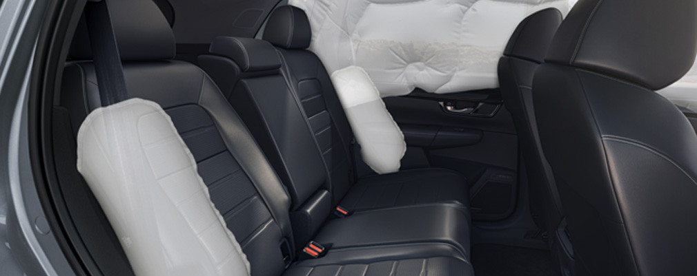
PROTEGE LO QUE MAS QUERES
La New CR-V está equipada con un completo sistema de 10 airbags; delanteros SRS (2), laterales (2), delanteros para rodillas (2), de tipo cortina con sensor de vuelco (2) y sistema airbags laterales para pasajeros de segunda fila (2). Cuenta con asientos con anclajes ISOFIX (en asientos traseros), sistema estabilizador del vehículo (VSA®) con control de tracción y estabilidad, sistema AHA (Vehicle Handling Assist o Asistente de Conducción Ágil) y sistema de monitoreo de la presión de los neumáticos (TPMS).

ESTRUCTURA DE CARROCERIA
La New CR-V cuenta con una estructura de la carrocería con ingeniería de compatibilidad avanzada (ACE™) desarrollada con acero de alta resistencia. Esta estructura dispersa la energía en caso de un impacto frontal para aumentar la protección de los ocupantes.
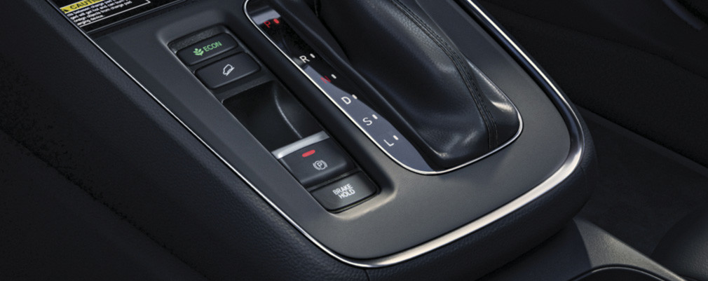
BRAKE HOLD
El sistema EPB o freno de estacionamiento eléctrico suma comodidad al conducir y puede activarse con un simple toque. La función Brake Hold mantiene el vehículo totalmente parado, en cualquier terreno o inclinación, hasta tocar el pedal del acelerador.
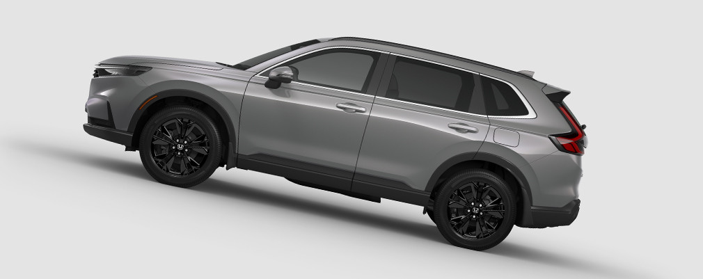
ASISTENCIA PARA ARRANQUE EN PENDIENTES
Este sistema mantiene la presión en la línea de frenado impidiendo que una vez detenido el vehículo retroceda cuando su pie pasa del freno al acelerador. Este sistema HSA se activa automáticamente cuando el vehículo detecta cierta inclinación y se desactiva en cualquier velocidad hacia adelante o en reversa
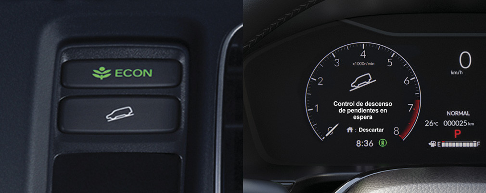
CONTROL DE DESCENSO EN PENDIENTES
Este sistema mantiene la presión en la línea de frenado impidiendo que una vez detenido el vehículo retroceda cuando su pie pasa del freno al acelerador. Este sistema HSA se activa automáticamente cuando el vehículo detecta cierta inclinación y se desactiva en cualquier velocidad hacia adelante o en reversa.
HONDA SENSING
CONTROL DE VELOCIDAD CRUCERO ADAPTATIVO (ACC)
Mantiene la distancia establecida ajustando la velocidad de seguimiento detrás de vehículos detectados.
SISTEMA DE FRENADO CON MITIGACION DE COLISION (CMBS)
Si continúa acercándose al vehículo que tiene adelante, el sistema (CMBS) aplicará automáticamente el freno.
SISTEMA DE ASISTENCIA PARA MANTENERSE EN EL CARIL (LKAS)
Este sistema ayuda a mantener el vehículo dentro del carril demarcado a partir de los 70 km/h. Puede corregir levemente la trayectoria aplicando un giro correctivo para ayudar al conductor a mantenerse en las líneas correctas.
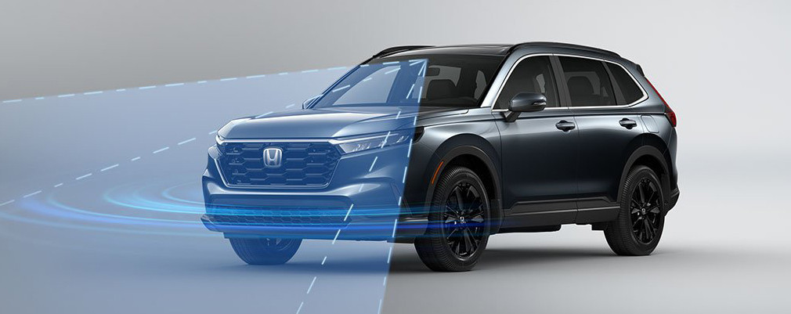
HONDA SENSING
Está compuesto por una cámara y un radar que trabaja en conjunto con sensores que realizan una lectura permanente de las situaciones y las condiciones del tráfico que brindan las siguientes funciones: control de velocidad crucero adaptativo (ACC) con seguimiento a baja velocidad (LSF), un sistema que ayuda al conductor a mantener una distancia segura con el vehículo de adelante; sistema de frenado con mitigación de colisión (CMBS); sistema de asistencia para mantenerse en el carril (LKAS); sistema de mitigación de salida de carril (RDM); y sistema de luces altas automáticas (AHB). Honda Sensing está disponible en todas las versiones.
CONTROL DE VELOCIDAD CRUCERO ADAPTATIVO (ACC)
Mantiene la distancia establecida ajustando la velocidad de seguimiento detrás de vehículos detectados.
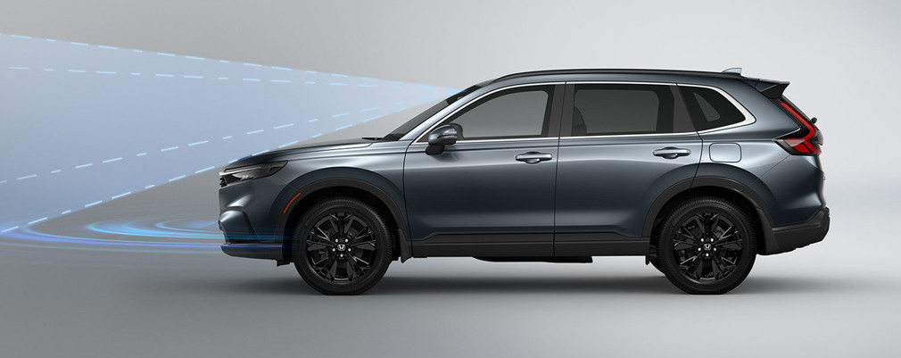
SISTEMA DE FRENADO CON MITIGACION DE COLISION (CMBS)
Si continúa acercándose al vehículo que tiene adelante, el sistema (CMBS) aplicará automáticamente el freno.
SISTEMA DE ADVERTENCIA DE COLISION FRONTAL (FWC)
Este sistema tomará nota de la distancia con el vehículo que tiene por delante. Si se acerca demasiado, el sistema alertará con vibraciones en el volante y sonido.
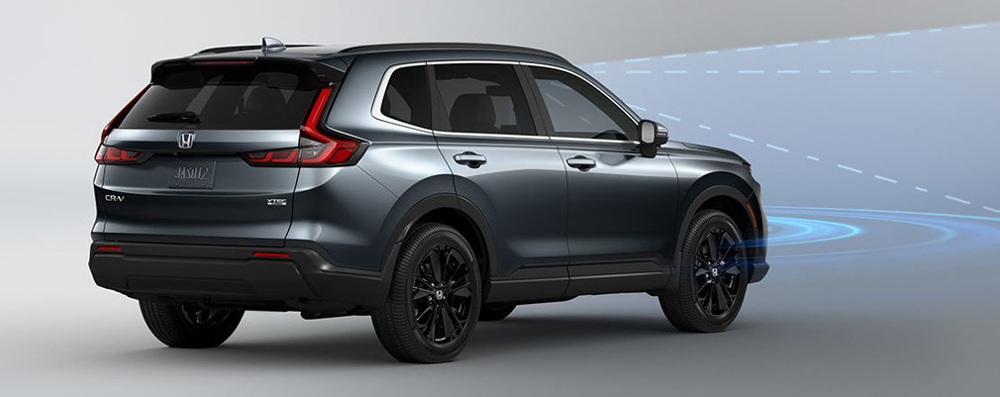
SISTEMA DE ASISTENCIA PARA MANTENERSE EN EL CARILL (LKAS)
Este sistema ayuda a mantener el vehículo dentro del carril demarcado a partir de los 70 km/h. Puede corregir levemente la trayectoria aplicando un giro correctivo para ayudar al conductor a mantenerse en las líneas correctas.